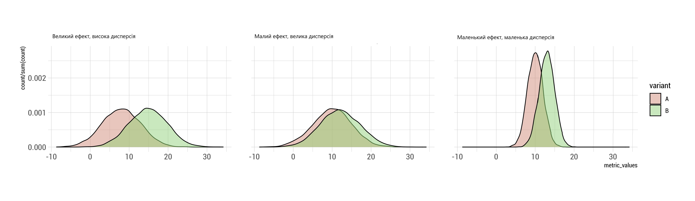
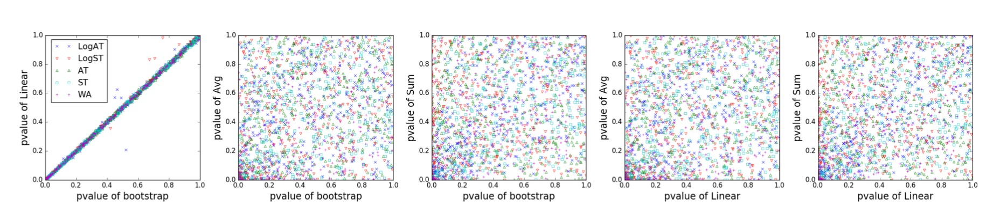

graph TD
A[Стратифікація] --> B["`Стратифікація
(stratified sample)`"]
A --> C["`Пост-стратифікація
(post-stratification)`"]
Прискорення A/B-тестів
Прикладна аналітика при розробці IT
Ігор Мірошниченко
КНУ імені Тараса Шевченка, ФІТ
Стратифікація
Зміщення та дисперсія
Дисперсія: вплив зовнішніх факторів
- Маленька вибірка \(\rightarrow\) низька репрезентативність
- Вплив тижневої/місячної сезонності
Зміщення: вплив оцінювача
- Сильне зміщення можливе при перевірці гіпотез \(t\)-критерієм на розподілі з “сильними” хвостами
- Сильне зміщення можливе у разі (непараметричного) бутстрепу медіан \(\rightarrow\) середня оцінки boot-медіан може не збігатися з медіаною початкового розподілу

Збільшення чутливості метрики
Для неперервних метрик можна використовувати методи підвищення чутливості шляхом зменшення дисперсії

Стратифікація
Середнє зважене
Яка середня позиція у банера?
Банер показувався в списку на 1-5 позиціях. Але взяти середнє по всіх позиціях — неправильно. Щоб дізнатися реальне середнє, будемо рахувати середнє зважене
Спосіб 1
| Позиція | Покази |
|---|---|
| 1 | 300 |
| 2 | 150 |
| 3 | 200 |
| 4 | 50 |
| 5 | 30 |
Середнє зважене
Яка середня позиція у банера?
Банер показувався в списку на 1-5 позиціях. Але взяти середнє по всіх позиціях — неправильно. Щоб дізнатися реальне середнє, будемо рахувати середнє зважене
Спосіб 1
| Позиція | Покази | Позиція * Покази |
|---|---|---|
| 1 | 300 | 1 * 300 = 300 |
| 2 | 150 | 2 * 150 = 300 |
| 3 | 200 | 3 * 200 = 600 |
| 4 | 50 | 4 * 50 = 200 |
| 5 | 30 | 5 * 30 = 150 |
| Сума | 730 | 1550 |
Середня зважена позиція
\[ = \frac{\sum{(\text{Покази} \times \text{Позиція})}}{\sum{\text{Позиція}}} \]
\[ = \frac{1550}{730} \approx 2.12 \]
Середнє зважене
Яка середня позиція у банера?
Банер показувався в списку на 1-5 позиціях. Але взяти середнє по всіх позиціях — неправильно. Щоб дізнатися реальне середнє, будемо рахувати середнє зважене
Спосіб 2
| Позиція | Покази |
|---|---|
| 1 | 300 |
| 2 | 150 |
| 3 | 200 |
| 4 | 50 |
| 5 | 30 |
Середнє зважене
Яка середня позиція у банера?
Банер показувався в списку на 1-5 позиціях. Але взяти середнє по всіх позиціях — неправильно. Щоб дізнатися реальне середнє, будемо рахувати середнє зважене
Спосіб 2
| Позиція | Покази | Покази / Сума показів |
|---|---|---|
| 1 | 300 | 300 / 730 = 0.411 |
| 2 | 150 | 150 / 730 = 0.205 |
| 3 | 200 | 200 / 730 = 0.274 |
| 4 | 50 | 50 / 730 = 0.068 |
| 5 | 30 | 30 / 730 = 0.041 |
| \(\sum\) = 730 | \(\sum\) = 1 |
Множимо позицію на вагу та додаємо
\[ \begin{aligned} & = 1 \times 0.411 \\ & + 2 \times 0.205 \\ & + 3 \times 0.274 \\ & + 4 \times 0.068 \\ & + 5 \times 0.041 \approx 2.12 \end{aligned} \]
Пост-стратифікація
Спосіб розрахунку повторює логіку розрахунку будь-якої зваженої оцінки:
- Вибираємо змінні, що найбільше впливають на метрику. Страта (або група) визначається \(k\)-градацією цієї змінної.
- Рахуємо ймовірність потрапляння користувача в групу за аналогією з тим, як ми рахували частки до цього в прикладі
- Рахуємо дисперсію всередині групи (страти)
- Рахуємо зважену оцінку \(\text{var}_{\text{strat}}\)
- Досягаємо скорочення дисперсії
Відмінність пре-стратифікації від пост-стратифікації в тому, що ваги визначаються на етапі конфігурації
\[ \text{var}_{\text{strat}}(\hat{Y}_{\text{strat}}) = \frac{1}{n} \sum_{k=1}^{K} p_k \sigma_k^2 \]
де \(p_k\) — ймовірність потрапляння в \(k\)-ту страту (вага),
\(\sigma_k^2\) — дисперсія в \(k\)-тій страті
Середня стратифікована за вибіркою буде такою самою, як і середня за ГС, тому що рахується середня зважена за стратами.
Можна особливо не заглиблюватися:
\[\mathbb{E}_{\text{strat}}(\hat{Y}_{\text{strat}}) = \sum_{k=1}^{K} p_k \mathbb{E}_{\text{strat}}(\bar{Y}_k) = \sum_{k=1}^{K} p_k \mu_k = \mu\]
де \(Y\) — метрика,
\(\mu\) — середнє метрики у ГС,
\(\mu_k\) — середнє метрики у \(k\)-тій страті,
\(p_k\) — частка \(k\)-тої страти в ГС (ймовірність потрапляння в страту)
Стратифікована дисперсія за вибіркою рахується зважено за кожною стратою.
Вага визначається ймовірністю потрапляння користувача в страту.
Наприклад, якщо за страти ми беремо регіони і їх у нас 3 з аудиторією, розбиті за частками 30%, 50%, 20%, то ваги для них \(p_{k1} = 0.3\), \(p_{k2} = 0.5\), \(p_{k3} = 0.2\).
\[\text{var}_{\text{strat}}(\hat{Y}_{\text{strat}}) = \frac{1}{n} \sum_{k=1}^{K} p_k \sigma_k^2\]
Міжгрупова та внутрішньогрупова дисперсія
\[ \text{var}(\hat{Y}) = \sum_{k=1}^{K} \frac{w_k}{n} \sigma_k^2 + \sum_{k=1}^{K} w_k (\mu_k - \mu)^2 \]
Міжгрупова та внутрішньогрупова дисперсія
\[ \text{var}(\hat{Y}) = \sum_{k=1}^{K} \frac{w_k}{n} \sigma_k^2 + \sum_{k=1}^{K} w_k (\mu_k - \mu)^2 \]
\(\bar{Y} = 8\)
\(\sigma^2 = 1\)
\(w = 0.22\)
\(\bar{Y} = 7.25\)
\(\sigma^2 = 1.6874\)
\(w = 0.44\)
\(\bar{Y} = 5.33\)
\(\sigma^2 = 1.555556\)
\(w = 0.33\)
Внутрішньогрупова дисперсія
0.22 * 1 + 0.44 * 1.6874 + 0.33 * 1.555556 = 1.490741
Міжгрупова дисперсія
0.22 * (8 - 6.777778)2 + 0.44 * (7.25 - 6.777778)2 + 0.33 * (5.33 - 6.777778)2 = 1.126543
\[\text{var}(\hat{Y}) = 1.490741 + 1.126543 = 2.617284\]
Висновки
- Страти мають бути стабільними і не змінюватися в часі — інакше вага страти буде нестабільною і це призведе до непередбачуваної зміни дисперсії
- Погано підібрані змінні для стратифікації тягнуть за собою збільшення дисперсії
- Стратифікацію можна використовувати, коли є проблеми з балансом вибірок. Наприклад, аномальний сплеск покупок з однієї страти з великою дисперсією можна приглушити стратифікацією
- Різні дослідження показують, що стратифікація може скоротити дисперсію від 1% до 40%
CUPED
Типова картина
На маленьких ефектах найчастіше ми бачимо низьку потужність на ранніх етапах експерименту. Причиною цього є висока дисперсія:
Рішення: Скорочення за рахунок історії
Скорочення досягається шляхом використання перед-експериментальних даних:
- Використання стратифікації
- Використання коваріат
\[ Y_{\text{CUPED}} = Y - \theta X \]
де \(Y\) — метрика,
\(X\) — метрика до експерименту.
Для збереження середнього використовується:
- \(X - \hat{X}\)
- \(\theta - \frac{\text{cov}(Y, X)}{\text{var}(X)}\)
у CUPED ми дивимося не просто на бізнес-метрику \(Y\), а на змінену \(Y_{\text{CUPED}}\), яка чутливіша, завдяки її зв’язку з перед-експериментальним періодом
Ідея полягає в тому, що дисперсія зумовлена двома компонентами: дисперсією коваріати і дисперсією невідомих змінних. Після корекції, ми позбуваємося дисперсії і залишаємо вплив невідомих змінних
CUPED: Принцип 1
- При використанні CUPED’а враховується поведінка користувача до експерименту (коваріата) і під час експерименту (фактична метрика).
- Після знаходження між цими метриками залежності зменшується дисперсія \(\rightarrow\) збільшується чутливість
- Таким чином, ми дізнаємося як змінилася поведінка користувача від середнього.
CUPED: Принцип 2
CUPED має дві модифікації: використання попередньої стратифікації або коваріати:
- Попередня стратифікація використовує категоріальні дані типу регіону, пакетний тариф тощо.
- Коваріата — числова неперервна метрика (середній чек) взята з історії користувача
На практиці частіше використовується коваріата, оскільки вона дає змогу сильніше скоротити дисперсію, ніж стратифікація
CUPED: Принцип 3
| id | exp_variant | sessionDuration (метрика) | sessionDuration (попередня метрика) | sessionDuration (CUPED) |
| 1 | control | 31 | 30 | 31 - (30 - ср.коваріата) * θ |
| 2 | control | 23 | 20 | 23 - (20 - ср.коваріата) * θ |
| 3 | treatment | 25 | 22 | 25 - (22 - ср.коваріата) * θ |
| 4 | treatment | 41 | 46 | 41 - (46 - ср.коваріата) * θ |
Cереднє за коваріатом і \(\theta\) підбираються за всіма групами
Обмеження та вимоги
- Необхідні історичні дані про користувача
- Неочевидно який перед-експериментальний період вибрати для коваріати
- Підходить для роботи з різницею середніх
- Для дискретних (бінарних) величин не підходить
Ratio-метрика та лінеаризація
Вибіркова метрика
\[\bar{X} = \frac{1}{n} \sum_{i=1}^{n} X_i\]
- Середній чек
- ARPU
Метрика за користувача
\[\bar{R} = \frac{\bar{Y}}{\bar{Z}} = \frac{\sum{Y_i}}{\sum{Z_i}}\]
- CTR
- Action per session
| Користувач | Дій на сторінці | Переглядів сторінки |
|---|---|---|
| 1 | 10 | 200 |
| 2 | 3 | 259 |
| 3 | 90 | 139 |
| 4 | 10 | 20 |
\(ratioUser1 = \frac{10}{200} = 0.05\)
\(ratioUser2 = \frac{3}{259} = 0.0116\)
\(ratioUser3 = \frac{90}{139} = 0.6475\)
\(ratioUser4 = \frac{10}{20} = 0.5\)
\(naiveAVG = \frac{0.05 + 0.0116 + 0.6475 + 0.5}{4} = 0.302\)
| Користувач | Дій на сторінці | Переглядів сторінки |
|---|---|---|
| 1 | 10 | 200 |
| 2 | 3 | 259 |
| 3 | 90 | 139 |
| 4 | 10 | 20 |
\(globalRatio = \frac{10 + 3 + 90 + 10}{200 + 259 + 139 + 20} = \frac{113}{618} = 0.182\)
\[naiveAVG = \frac{0.05 + 0.0116 + 0.6475 + 0.5}{4} = 0.302\]
\[bias = 0.302 - 0.182 = 0.12\]
Ratio-метрика
Ratio метрику ми можемо порахувати як мінімум трьома способами
naiveRatio
- Має сильний зсув відносно globalRatio
- За рахунок зсуву \(p\)-значення може «фарбуватися» випадково
globalRatio
- Вимагає рахувати дисперсію для відношення двох випадкових величин
- Неможливо зберегти «поюзерну» спрямованість
- Для розрахунку дисперсії потрібно використовувати бутсреп
L-метрика (лінеаризація)
- Зберігає «поюзерну» спрямованість
- Можна використовувати базові статистичні оцінювачі
- Можна використовувати для подальшої оптимізації дисперсії
- Просто обчислюється
- Не зберігається global ratio
Принцип роботи лінеаризації
\[Lx, y, k(U) = X(u) - kY(u)\]
- K — ratio з контролю
- X — кліки користувача
- Y — перегляди користувача
Ми хочемо зрозуміти відхилення метрики в експерименті відносно ratio у контролі
Інакше кажучи — дивимося, що змінилося в експерименті відносно ситуації в контролі
Порівняння способів аналізу ratio-метрик
- \(p\)-значення за \(L\) метрики співспрямований з \(p\)-значення для ratio бутсрепа
- Середнє всіх відношень сильно відрізняється від бутсрепа і L метрики за рахунок зсуву
- Лінеаризація не дозволяє прискорювати a/b тести
Плюси L метрики
- Зберігається поюзерна спрямованість
- На L метрику можна використовувати методи оптимізації дисперсії на кшталт CUPED
- Якщо перед вами не стоїть завдання зберігати поюзерну спрямованість або спрощувати статистичні операції — то можна використовувати бутсреп для оцінки ratio метрик. Результат буде співспрямований з L метрикою
Дякую за увагу!